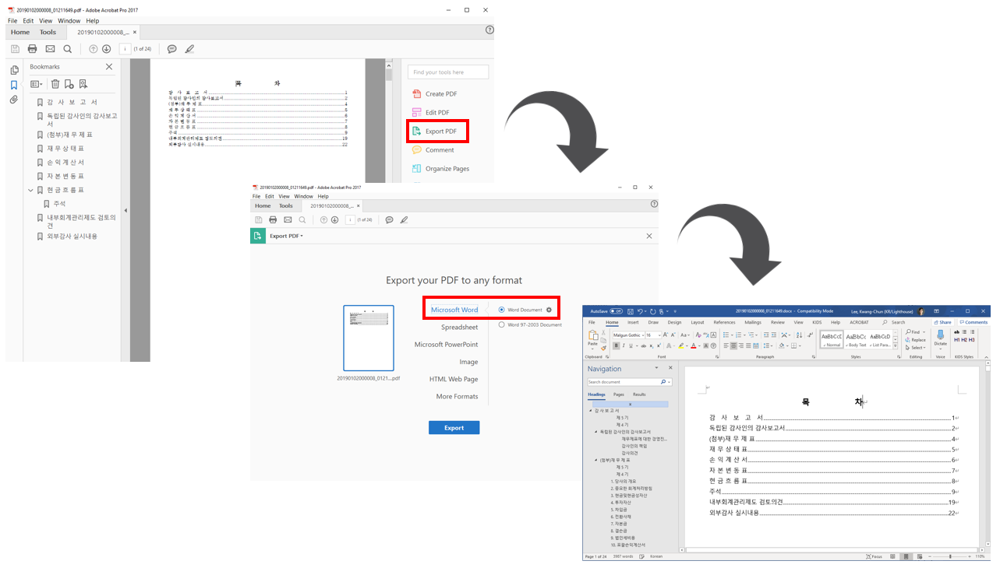

1 PDF 파일 워드 변환
PDF 파일을 워드 파일로 변환하는 방법은 다양하다. 개념적으로는 구글 독스로 PDF 파일을 불러읽어 들인 후 워드로 내보내는 방법이 있고, 워드에서 PDF 파일을 불러와서 워드 파일로 변환시키는 방법도 있고, Acrobat Reader에서 상용버전을 구입하여 읽어들인 PDF 파일을 워드로 내보내는 방법도 있다.
1.1 PDF → 구글 독스 → 워드1
먼저 최근 구글 독스(Google Docs) 성능이 좋아져서 PDF 파일을 구글 클라우드에 올려 이를 구글 독스로 변환시켜 편집가능한 형태로 만드는 방법을 활용하여 마이크로소프트 워드로 파일형태를 변형시켜 원하는 결과를 얻는다. ’ 
1.2 PDF → MS Word/Acrobat Reader → 워드2
“Data science and its relationship to big data and data-driven decision making” [1] 논문을 편집가능한 워드 파일로 변환시키는 방법은 마이크로소프트 워드에서 PDF 파일을 읽는 방법, Acrobat Reader에서 PDF 파일을 읽어 들인 후 워드파일로 내보내는 방법도 있다.

2 \(\LaTeX\) → 워드3
학교에서 \(\LaTeX\)으로 논문을 쓸대는 좋지만 그렇다고 모든 사람들이 논문을 \(\LaTeX\)으로 작업하는 것도 아니다. 이런 경우 워드로 어쩔 수 없이 작성해야 하는 경우 pandoc을 활용하면 파일변환에 따른 불편함을 많이 줄일 수 있다. 그리고 덤으로 워드의 “Track changes” 추적기능은 워드로 파일을 변환시키면서 얻는 커다란 장점이 될 수 있다.
.tex 파일을 .docx 파일로 변환시키는데 이 과정에서 참조(--filter pandoc-crossref), 서지관리(--bibliography=myref.bib), 그리고 서식(--reference-docx=IEEE_template.doc)을 함께 적용시켜 \(\LaTeX\) 파일에서 워드파일로 변환시키는 수고를 상당부분 줄일 수 있다.
pandoc paper.tex \
-o paper.docx \
--filter pandoc-crossref \
--bibliography=myref.bib \
--reference-docx=IEEE_template.doc 3 리브레오피스 → 워드
리브레오피스(LibreOffice)를 구성하는 Writer는 원래 목적이 워드를 대체하기 위해 만들어졌기 때문에 PDF 파일을 입력으로 받아 워드 파일로 내보낸다는 것이 철학에 반한다.
4 Acrobat: .pdf → .docx
아도브(Adobe) 회사의 애크로뱃 제품(Adobe Acrobat Pro)을 사용해서 PDF 파일을 워드로 변환시켜보자.
4.1 PDF 파일 하나
GUI를 사용해서 PDF 파일을 “Export PDF” 기능으로 워드 파일로 변환시킬 수 있다. “Export PDF” 다음에 “Microsoft Word”를 선택하고 “Word Document”를 선택할 경우 워드파일로 변환시킬 수 있다.

4.2 다수 PDF 파일
만약, PDF 파일이 많은 경우 이와 같은 방식으로 작업하는 것이 경우에 따라서는 불가능하다. 이를 위해서 자동화가 필수적인데 먼저 “Action Wizard”를 통해 자동화 선택옵션을 지정하여 PDF2WORD 액션을 생성시킨다.

다음으로 PDF2WORD 액션을 실행시켜 PDF 파일을 내보내기하여 워드파일을 다량으로 만들어낸다.

fs::dir_ls(path="data/word_files/")data/word_files/word_20190102000008_01211649.docx
data/word_files/word_20190102000009_00952411.docx
data/word_files/word_20190102000024_00825940.docx1. Provost F, Fawcett T. Data science and its relationship to big data and data-driven decision making. Big data. 2013;1:51–9.
데이터 과학자 이광춘 저작
kwangchun.lee.7@gmail.com